|
화이트박스시험관리시스템(White-box Test Management)을 통해 QAC, CodeSonar, Parasoft C++, Codescroll과 같은 정적분석 관리 도구의 테스트 결과를 SILKROAD에 등록하고 이슈, 요구사항, 소스코드 리비전 등의 개발 데이터와의 추적성을 관리할 수 있다.
정적분석 도구와의 연동 없이 SILKROAD에서 제공하는 정적분석 결과 템플릿을 이용하여 결과 데이터 입력 후 SILKROAD에 등록할 수 있다.
정적분석 도구와의 자동 연동을 위해 CI(Continuous Integration)도구 Jenkins와 SILKROAD Agent가 연동할 수 있다. 빌드(Build)된 정적분석 도구의 테스트 결과를 자동 또는 수동으로 등록할 수 있다.
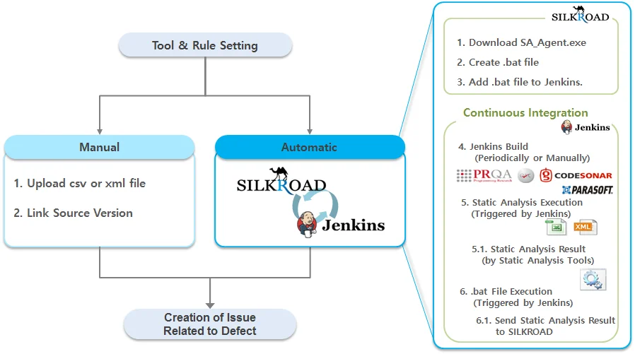 |
|
구분 | 명칭 | 설명 |
| 정적분석 탭 | 정적분석 관리 탭(테스트 결과 정보 및 대시보드 표시) |
| 대시보드 필터 | 대시보드 표시 도구 필터 |
| 대시보드 | 정적분석 결과 표시 영역 |
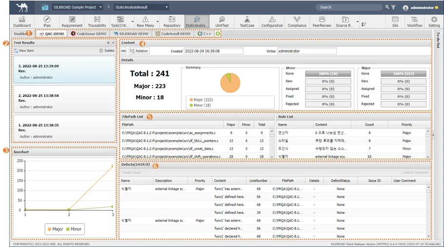 |
구분 | 명칭 | 설명 |
| 정적분석 탭 | 정적분석 관리 탭(정적분석 결과 정보 및 대시보드 표시) |
| Test Results | 정적분석 결과 파일 목록 표시 |
| 정적분석 추이 그래프 | 정적분석 결과 개수 평균 그래프 |
| Content | 정적분석 결과 파일 정보 표시 |
| Details | FilePath List: 정적분석 타겟(Target) 소스코드 경로 및 Priority(Major, Minor, Highest, Medium 등) 표시 Rule List: 위반 Rule 목록, 개수, Priority 표시 |
| Defects | Rule 위반 Defect 목록 및 상세 정보 |
정적분석 도구(QAC, CodeSonar, Parasoft C++, Codescroll)와 SILKROAD의 연동을 통해 정적분석 도구로부터 테스트 결과 데이터를 SILKROAD에 등록할 수 있다. 테스트 결과의 타겟 소스 리비전을 설정할 수 있다. Defects와 관련된 이슈를 생성하여 SILKROAD 이슈관리시스템에서 관리할 수 있다.
① 화면 상단 메뉴 탭의 ‘’ 버튼을 클릭한다.
② 정적분석 도구 연동을 위한 ‘Setting’ 창이 생성된다.
③ ‘Setting’ 영역의 정적분석 명, 타겟 소스 리포지토리, 정적분석 도구 종류, 정적분석 결과 파일 경로를 선택/입력한다.
|
④ ‘Rules’ 영역의 Browse 버튼을 클릭한다.
⑤ 윈도우탐색기 창이 생성되면 정적분석 코딩 룰(Rule) 파일을 선택하여 등록한다.
⑥ ‘Rules’ 영역에 선택한 정적분석 코딩 룰(Rule)의 리스트가 출력되면, ‘OK’ 버튼을 클릭하여 설정을 완료한다.
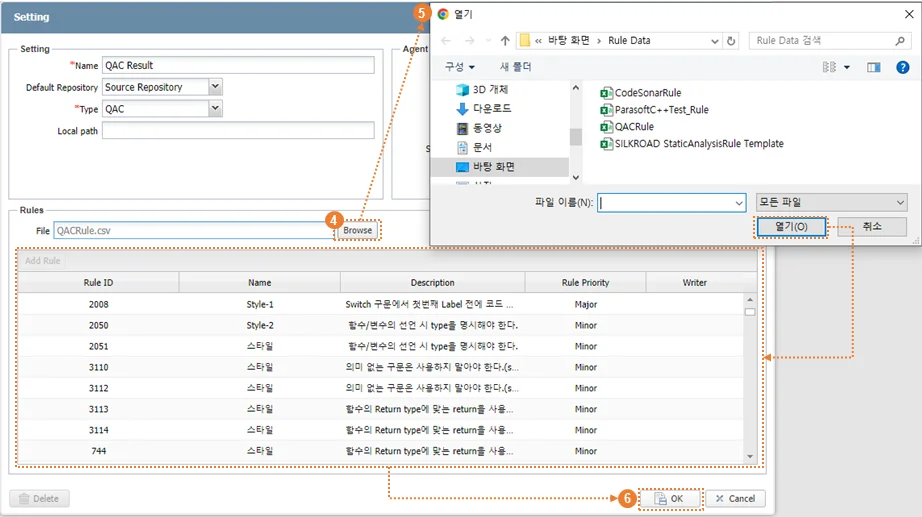 |
정적분석 코딩 룰(Rule)의 최초 등록시에는 Rule에 대한 수정/삭제/추가가 불가능하다. 정적분석 연동 도구 탭 생성시 코딩 룰(Rule)을 등록하지 않았을 경우, ‘2.3.1.1 Rule 등록’을 참조하여 코딩 룰(Rule)을 등록할 수 있다. |
정적분석 도구와의 연동 없이 SILKROAD에서 제공하는 정적분석 결과 작성 템플릿을 다운받아 결과 입력 후 SILKROAD로 등록하여 관리할 수 있다.
① 화면 상단 메뉴 탭의 ‘’ 버튼을 클릭한다.
② 정적분석 도구 연동을 위한 ‘Setting’ 창이 생성된다.
③ ‘Setting’ 영역의 정적분석 도구 종류(Type)에서 SILKROAD를 선택하고, 정적분석 명, 타겟 소스 리포지토리, 정적분석 결과 파일 경로를 선택/입력한다.
|
④ ‘Rules’ 영역의 Browse 버튼을 클릭한다.
⑤ 윈도우탐색기 창이 생성되면 정적분석 코딩 룰(Rule) 파일을 선택하여 등록한다.
⑥ ‘Rules’ 영역에 선택한 정적분석 코딩 룰(Rule)의 리스트가 출력되면, ‘OK’ 버튼을 클릭하여 설정을 완료한다.
|
① 변경하고자 하는 정적분석 도구 연동 탭을 선택한다.
② ‘Test Result’ 영역의 ‘’ 버튼을 클릭한다.
|
③ ‘Setting’ 창이 생성된다.
④ ‘Setting’ 영역의 ‘Name’에 변경하고자 하는 탭명을 기재한다.
⑤ ‘OK’ 버튼을 클릭하여 등록 내용을 저장한다.
|
① 삭제하고자 하는 정적분석 도구 연동 탭을 선택한다.
② ‘Test Result’ 영역의 ‘’ 버튼을 클릭한다.
③ ‘Setting’ 창이 생성되면, 좌측 하단의 ‘Delete’ 버튼을 선택한다.
④ ‘Delete’ 알림창이 생성되면 OK 버튼을 선택한다.
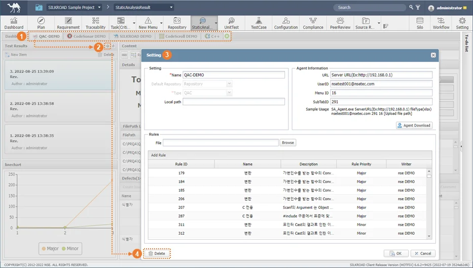 |
정적분석 도구 연동탭은 Write 권한 이상을 가진 사람만이 삭제 가능하다. |
① 코딩 룰(Rule)을 등록하고자 하는 정적분석 도구 연동 탭을 선택한다.
② ‘Test Result’ 영역의 ‘’ 버튼을 클릭한다.
|
③ ‘Setting’ 창이 생성된다.
④ ‘Browse’ 버튼을 클릭하여 Rule 파일을 등록한다.
⑤ ‘OK’ 버튼을 클릭하여 등록 내용을 저장한다.
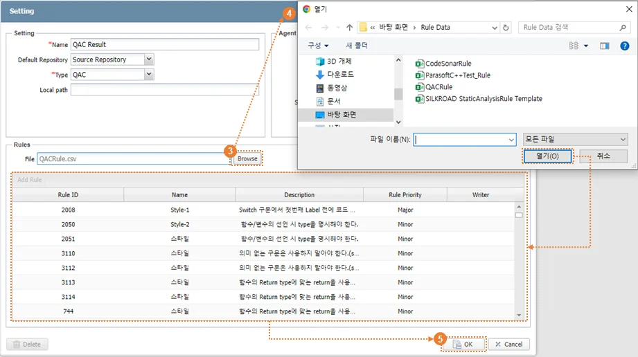 |
① 코딩 룰(Rule)을 등록하고자 하는 정적분석 도구 연동 탭을 선택한다.
② ‘Test Result’ 영역의 ‘’ 버튼을 클릭한다.
|
③ ‘Setting’ 창이 생성된다.
④ ‘Add Rule’ 버튼을 클릭한다.
⑤ Rule ID, Name, Description, Rule Priority 정보를 선택/입력한다.
⑥ ‘Update’ 버튼을 클릭한다.
|
⑦ ‘OK’ 버튼을 클릭하여 추가 내용을 저장한다.
⑧ ‘Cancel’ 버튼을 클릭할 경우 Rule은 추가되지 않는다.
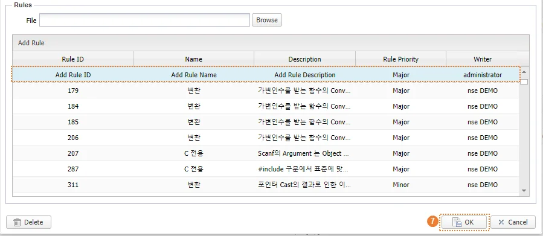 |
Rule ID, Name, Description, Rule Priority 중 하나의 정보라도 기재하지 않을 경우 Rule을 추가할 수 없다. |
① 코딩 룰(Rule)을 변경하고자 하는 정적분석 도구 연동 탭을 선택한다.
② ‘Test Result’ 영역의 ‘’ 버튼을 클릭한다.
|
③ ‘Setting’ 창이 생성된다.
④ 변경하고자 하는 Rule을 더블 클릭 후 Rule ID, Name, Description, Rule Priority 중 변경하고자 하는 정보를 변경한다.
⑤ ‘Update’ 버튼을 클릭한다.
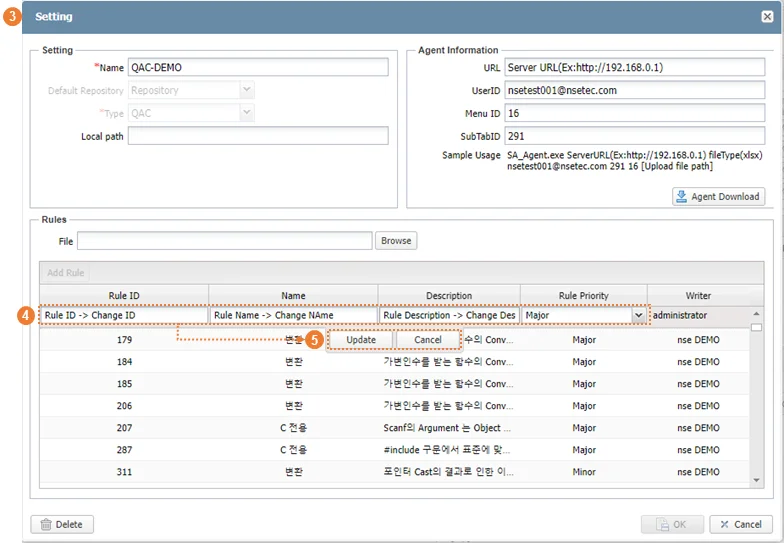 |
⑥ ‘OK’ 버튼을 클릭하여 변경 내용을 저장한다.
⑦ ‘Cancel’ 버튼을 클릭할 경우 변경 내용이 반영되지 않는다.
|
① 삭제하고자 하는 코딩 룰(Rule)이 등록되어 있는 정적분석 도구 연동 탭을 선택한다.
② ‘Test Result’ 영역의 ‘’ 버튼을 클릭한다.
|
③ ‘Setting’ 창이 생성된다.
④ 삭제하고자 하는 Rule을 우클릭한다.
⑤ ‘Delete’ 버튼을 클릭한다.
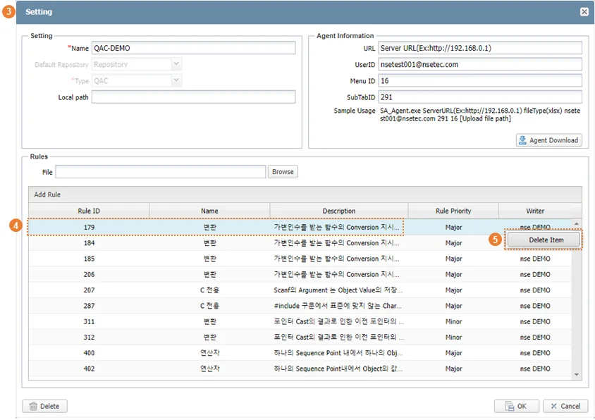 |
⑥ ‘OK’ 버튼을 클릭하여 삭제 결과를 저장한다.
⑦ ‘Cancel’ 버튼을 클릭할 경우 Rule은 삭제되지 않는다.
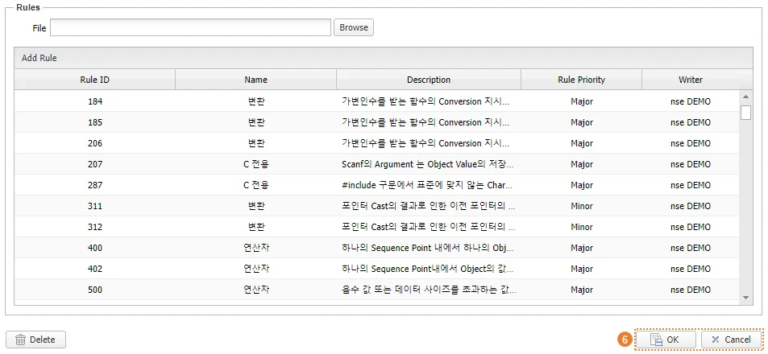 |
① 정적분석 도구를 추가하기 위한 버튼을 클릭한다.
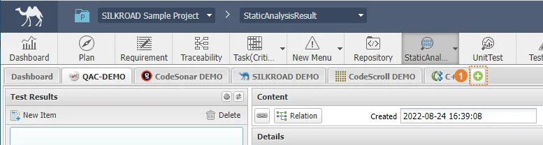 |
② Setting 영역의 Type에서 SILKROAD를 선택한다.
③ ‘Rules’의 ‘Template Download’ 버튼을 클릭한다.
|
④ Rule 작성 템플릿이 저장된다.
SILKROAD 외 다른 Type에서는 Template를 Download 할 수 없다. |
① 정적분석 결과를 등록하고자 하는 정적분석 도구 연동 탭을 선택한다.
② ‘Test Result’ 영역의‘New Item’ 버튼을 클릭한다.
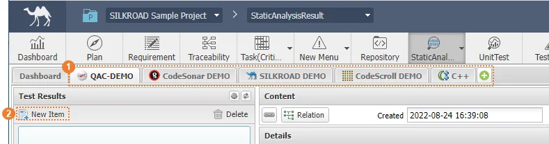 |
③ ‘New Item’ 창이 생성된다.
④ ‘File’의 ‘Browse’ 버튼을 클릭하여 정적분석 결과 파일을 선택하거나, ‘Local Path’ 또는 ‘Server Address’ 영역에 Project 폴더를 제외한 정적분석 결과 파일의 로컬경로 정보를 입력하여 결과 파일을 등록한다.
SILKROAD Tamplate 결과 수동 등록 시 SILKROAD 정적분석 탭 내 위치한‘Template Download’ 버튼을 클릭하여 템플릿을 사용자 PC에 저장한다. 이후 양식에 따라 결과 값을 입력한 후 ‘Browse’ 버튼을 클릭하여 결과 파일을 등록한다. |
|
⑤ 등록된 정적분석 결과 파일 내용이 표시된다.
|
⑥ 정적분석 대상 소스 리비전과 추적성 연결을 위하여 ‘Revision’의 ‘Browse’ 버튼을 클릭한다.
정적분석탭 생성시 Setting Tpye을 Repository로 선택시에만 Revision을 연동하기 위한 기능이 생성된다. 정적분석 대상 소스 리비전과의 추적성 연결을 위해서는 Git, SVN, Perforce 등과 같이 소스 버전 관리 시스템과 연동을 시킨 상태에서 기능 활용이 가능하다. |
|
⑦ ‘Select Revision’ 창이 생성된다.
⑧ 소스 리비전을 선택하고 ‘OK’ 버튼을 클릭한다.
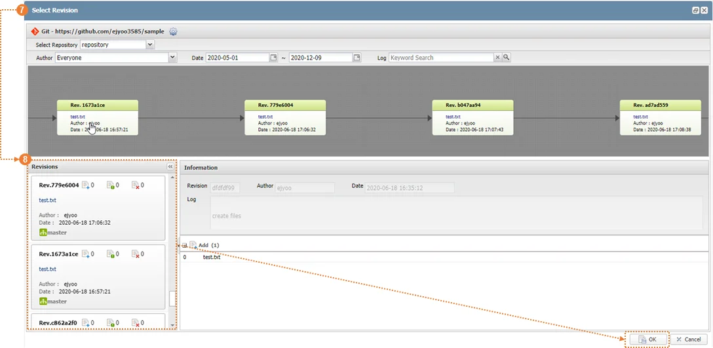 |
⑨ ‘New Item’ 창의 ‘OK’ 버튼을 클릭한다.
|
⑩ ‘Success’ 창이 생성되면 ‘OK’ 버튼을 클릭하여 정적분석결과를 등록한다.
|
⑪ 정적분석결과의 내용이 화면에 표시된다.
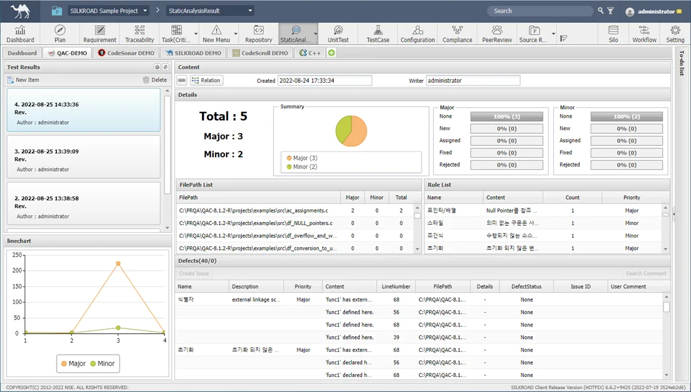 |
① ‘’ 버튼을 클릭한다.
② ‘Setting’ 창이 생성된다.
③ ‘Download Agent’ 버튼을 클릭하여 SILKROAD Agent(SA_Agent.exe)를 다운로드한다.
④ Jenkins에 등록할 .bat 파일을 생성한다. ‘Sample Usage’를 참고하여 SA_Agent 위치, SILKROAD 서버 주소, 로그인 계정 ID, 정적분석 모듈 시스템 ID, 도구 탭 시스템 ID, 정적분석 결과 파일 위치, 소스코드 리비전 정보를 작성한다.
⑤ Jenkins에 해당 .bat 파일을 등록한다.
⑥ 정적분석도구의 테스트 결과를 Jenkins가 자동으로 빌드하고 해당 데이터를 SILKROAD가 자동으로 불러와 등록한다.
① 삭제하고자 하는 정적분석 결과가 등록된 정적분석 도구 연동 탭을 선택한다.
② ‘TestResults’의 삭제 대상 파일을 선택한다.
|
③ ‘Delete’ 버튼을 클릭한다.
④ ‘Delete’ 창이 생성되면‘OK’ 버튼을 클릭하여 삭제를 완료한다.
|
|
① SILKROAD에 등록된 Item과 연계하고자 하는 정적분석 결과가 등록된 정적분석 도구 연동 탭을 선택한다.
② ‘Test Results’에 등록된 파일을 선택한다.
③ 정적분석결과가 표시되는 화면 상단의 Content 영역의 Relation 버튼을 클릭한다.
|
④ Resource Connector 가 생성된다.
⑤ Menu Tree의 Menu 드롭박스에서 연결하고자 하는 Menu를 선택한다.
|
⑥ 선택된 Menu에 등록되어 있는 아이템을 선택하고, Menu Items 영역에서 연결하고자 하는 Item의 체크박스를 체크한다.
⑦ Resource Connector 하단의 Relation Items에 선택한 Item이 등록되는지 확인 후 OK 버튼을 클릭하여 저장한다.
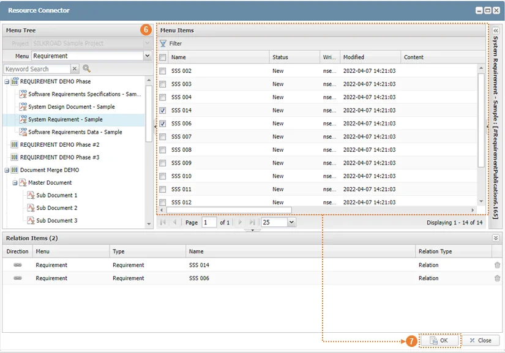 |
⑧ ‘Success’ 창이 생성되면 OK 버튼을 클릭한다.
수동 또는 자동으로 등록한 정적분석 결과의 타겟 소스 정보, 위반 Rule 정보 등을 조회할 수 있다.
① ‘FilePath List’의 FilePath를 더블클릭한다.
|
② Rule에 위반된 소스코드의 정보창이 생성된다.
|
③ 소스코드 목록을 더블클릭하여 상세 정보를 확인한다.
|
① ‘Rule List’의 Rule을 더블클릭한다.
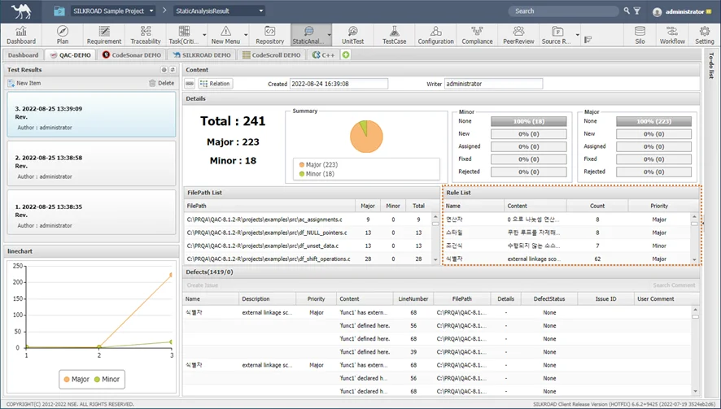 |
② 선택한 Rule의 정보창이 생성되면 해당 Rule을 위반한 소스코드 목록이 표시된다.
|
③ 소스코드 목록을 더블클릭하여 상세 정보를 확인한다.
|
정적분석 결과 발견된 결함(Defects)의 상세 정보를 확인하고 관련된 이슈(Issue)를 생성/등록하여 SILKROAD 이슈관리시스템에서 관리할 수 있다.
① ‘Defects’의 Defect를 더블클릭한다.
|
② Defect 정보창이 생성된다.
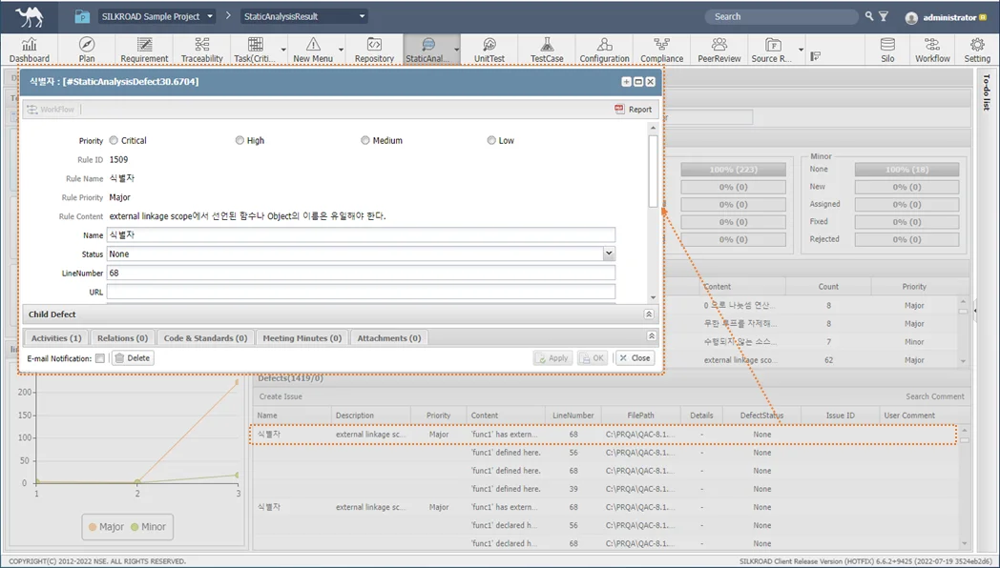 |
① ‘Defects’의 Defect를 선택한 후 목록 상단의 ‘Create Issue’ 버튼을 클릭한다.
② ‘Select Tracker’ 창이 생성되면 Tracker를 선택한 후 ‘OK’ 버튼을 클릭한다.
이슈 메뉴(Menu=Tracker)가 다중 생성되어 있는 경우 ‘Select Issue Menu’ 창이 생성된다. 메뉴 선택 시 ‘New Issue’ 창이 생성된다. |
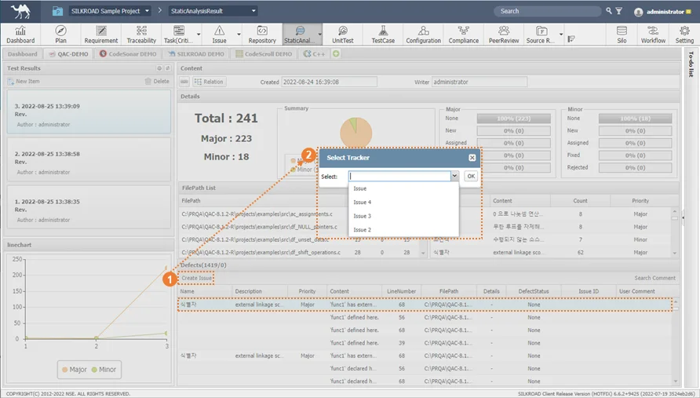 |
③ 이슈창이 생성되면 이슈 내용을 입력/선택한다.
④ ‘OK’ 버튼을 클릭하여 이슈 생성을 완료한다.
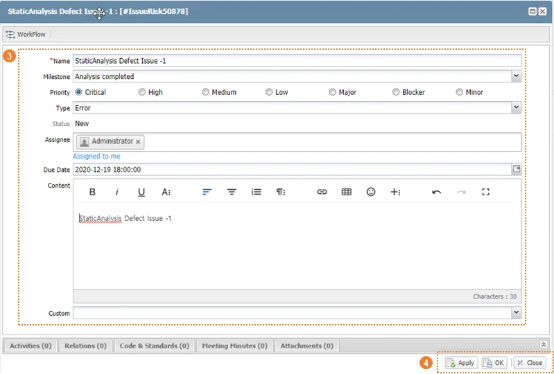 |
⑤ ‘Defects’ 영역의 ‘Issue ID’ 셀에 Defect와 관련된 이슈의 하이퍼링크가 생성된다.
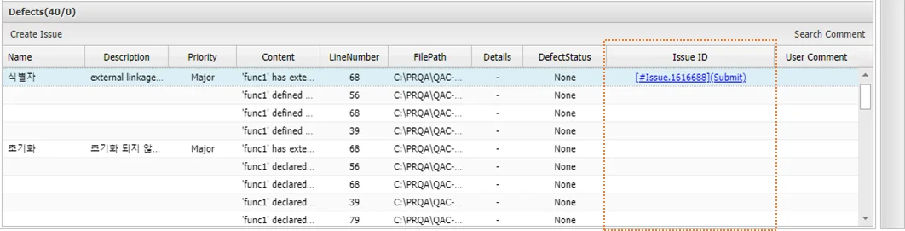 |
⑥ 하이퍼링크를 클릭하여 등록한 이슈 정보창을 생성한다. 이슈 정보창 하단의 ‘Relations’ 탭에 정적분석 결과 결함이 자동 등록된다.
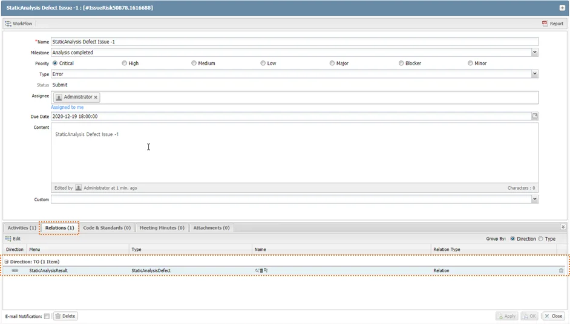 |
⑦ 하나의 Defect에 여러 개의 이슈를 등록하여 관리할 수 있다.
|
⑧ 등록된 이슈는 SILKROAD 이슈관리시스템을 통해서도 확인이 가능하다.
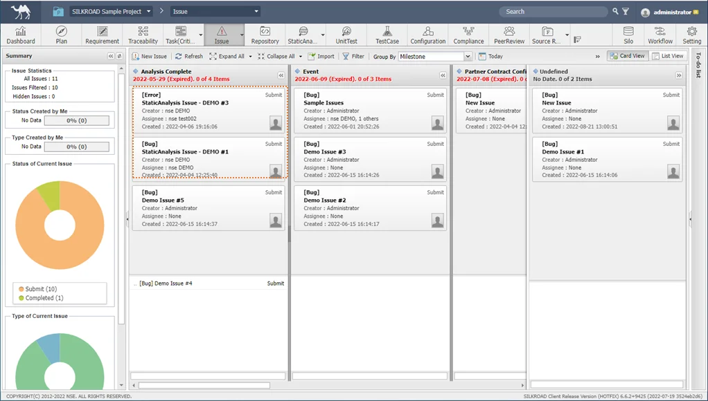 |
① ‘Defects’에 등록된 이슈 하이퍼링크를 클릭한다.
② 이슈 정보창이 생성되면 좌측 하단의 ‘Delete’ 버튼을 클릭한다.
③ ‘Delete’ 창이 생성되면 ‘OK’ 버튼을 클릭하여 삭제를 완료한다.
|
④ ‘Defects’에 등록되었던 이슈가 삭제되었음을 확인한다.
① Defects에 등록된 결함의 User Comment 칼럼을 더블클릭한다.
② Comment 칼럼의 기재 영역이 활성화되면 결함에 대한 Comment를 기재한다.
|
① Comment를 기재하고자 하는 결함을 선택한다.
② ‘Search Comment’ 기능을 실행한다.
③ ‘Search Comment’ 창이 활성화되면 RuleID를 통하여 Comment를 검색 또는 Comment List에서 기재하고자 하는 Comment를 선택하고 OK 버튼을 클릭한다.
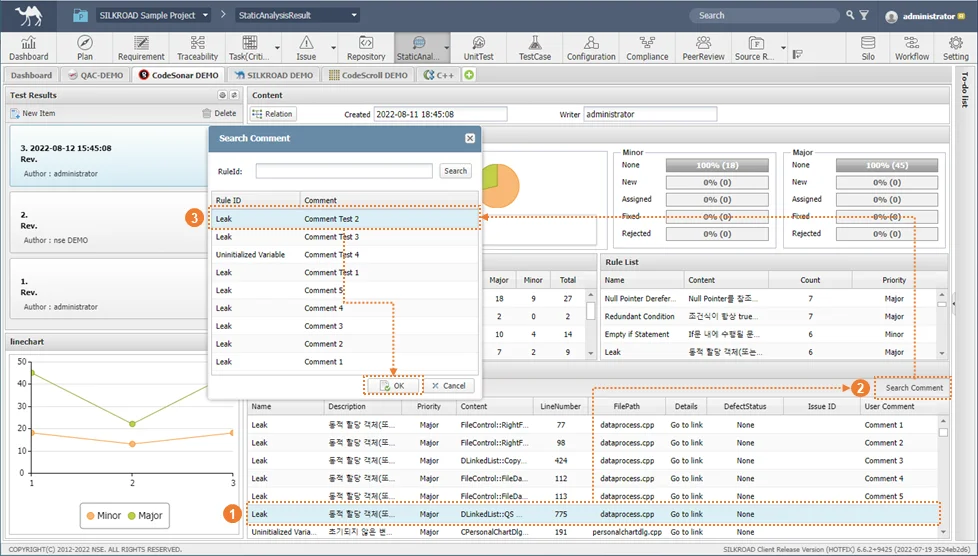 |
④ ‘Search Comment’창에서 선택한 Comment 내용이 User Comment 칼럼에 기재되는지 확인한다.
번호 | 메시지 | 설명 | 해결방안 |
|---|---|---|---|
1 | Please select the *.cvs file! | “*.cvs” 파일을 선택하지 않은 상태에서 윈도우 탐색기를 종료할 경우 | |
2 | Please make sure if the input data is valid. | 유효하지 않은 데이터를 저장 또는 등록시도할 경우 | |
3 | Object reference not set to an instance of an object. | ||
4 | |||
5 | |||
6 | |||
7 | |||
8 | |||
9 |
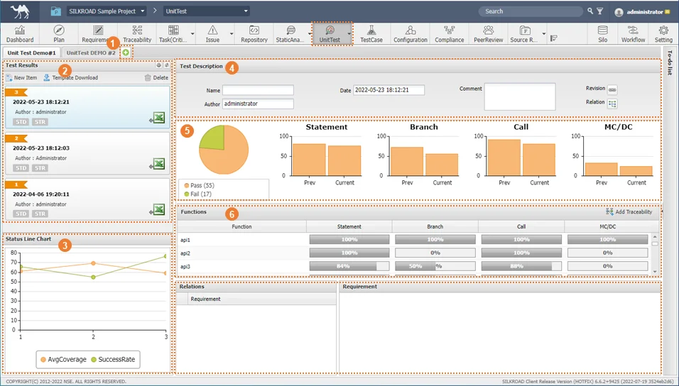 |
구분 | 명칭 | 설명 |
| UnitTest 탭 | UnitTest 관리 탭 |
| Test Results | 단위시험 결과 MS-Excel 파일 목록 |
| 단위시험 추이 그래프 | 시험 수행 성공 율, 평균 커버리지 율 그래프 |
| Test Description | 시험 날짜, 작성자, 추적 소스코드 리비전 등 정보 표시 |
| 단위시험 결과 그래프 | 시험 결과(Statement, Branch, Call, MC/DC 커버리지 등) 그래프 |
| Functions | Functions 별 시험 결과 정보 표시 |
Relations | Function-요구사항 간 추적성 정보 |
CodeScrolll과 같은 단위시험 도구의 시험 결과 파일(MS-Excel)을 SILKROAD에 등록하여 시험 대상 Function과 요구사항 간 추적성을 관리할 수 있다.
① ‘+’ 버튼을 클릭한다.
② ‘New Unit Test Setting’ 팝업창이 생성되면 Name을 기재하고 OK 버튼을 클릭한다.
③ UnitTest 탭이 생성됨을 확인한다.
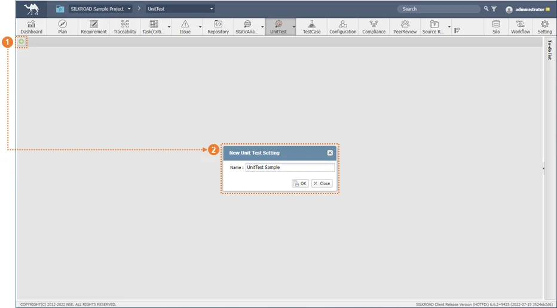 |
① ‘Test Results’ 영역의 ‘New Item’ 버튼을 클릭한다.
② 단위시험결과를 업로드하기 위한 ‘New Item’ 창이 생성된다.
③ ‘Browse’ 버튼을 클릭한다.
④ 탐색기가 실행되면, 사용자 PC에 저장되어 있는 단위시험 결과 파일(MS-Excel)을 선택한다.
|
⑤ 선택한 단위시험결과 내용이 표시된다.
⑥ ‘Type’을 선택하고, 단위시험결과에 대한 ‘Name’ 과 ‘Comment’를 기재한다.
⑦ ‘OK’ 버튼을 클릭하여 등록을 완료한다.
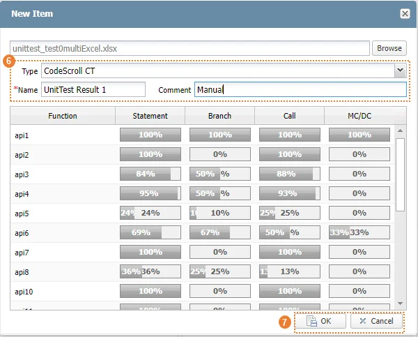 |
⑧ 등록한 단위시험결과가 SILKROAD에 표시되는 것을 확인한다.
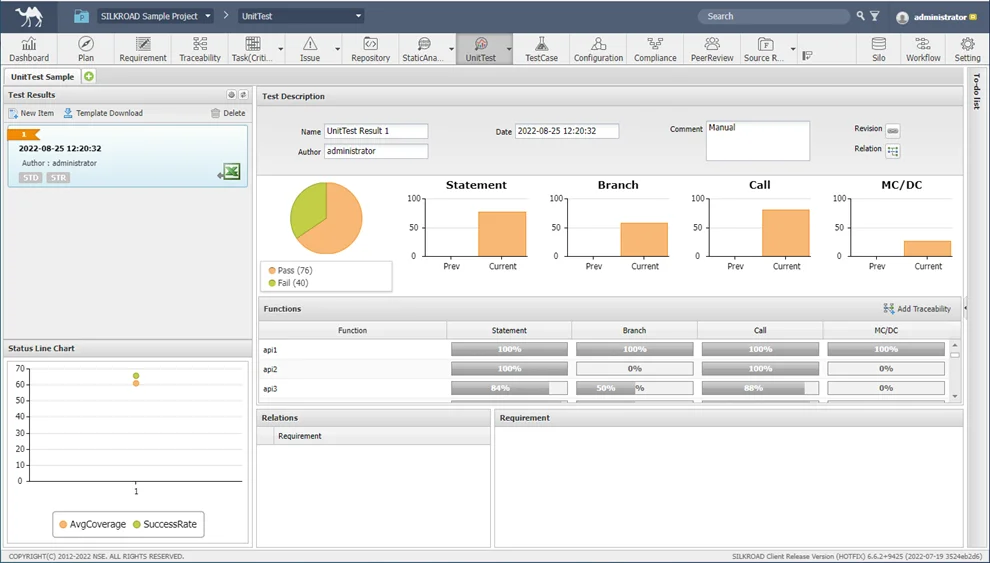 |
① ‘Template Download’ 버튼을 클릭한다.
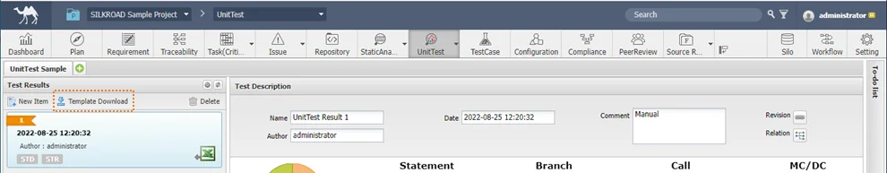 |
② 사용자 계정의 Local PC로 ‘UnitTest Template’가 다운로드된다.
① Functions 영역의 우측에 위치한‘Add Traceability’ 버튼을 클릭한다.
② ‘Traceability’ 창이 생성된다.
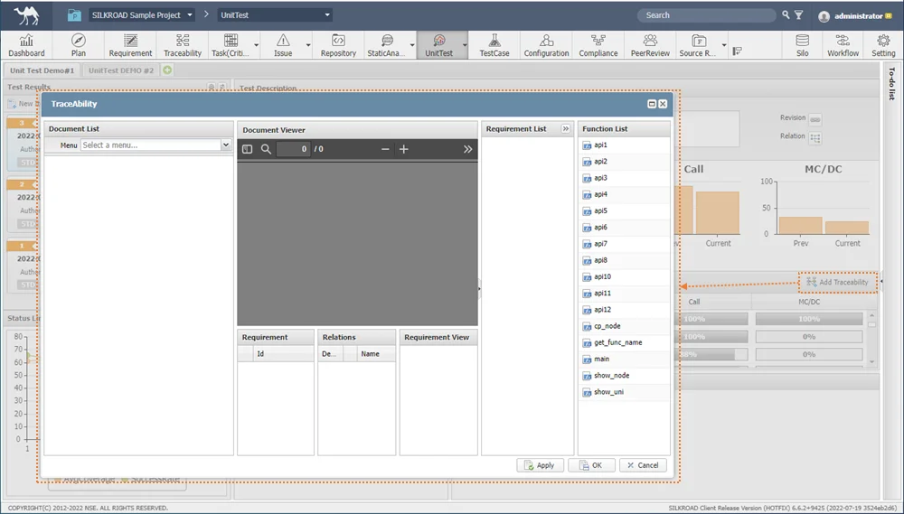 |
③ Document List 영역의 요구사항 메뉴 펼침단추를 클릭하여 요구사항 메뉴를 선택한다.
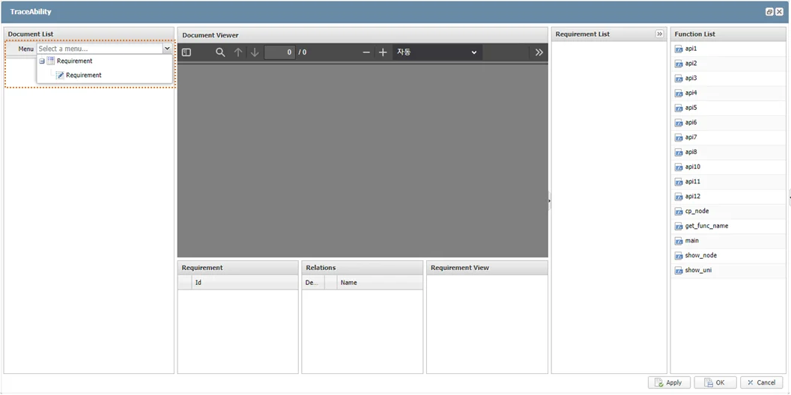 |
④ Document List 에서 요구사항 문서를 선택한다.
⑤ 선택한 요구사항 문서의 내용과 요구사항 목록이 표시된다.
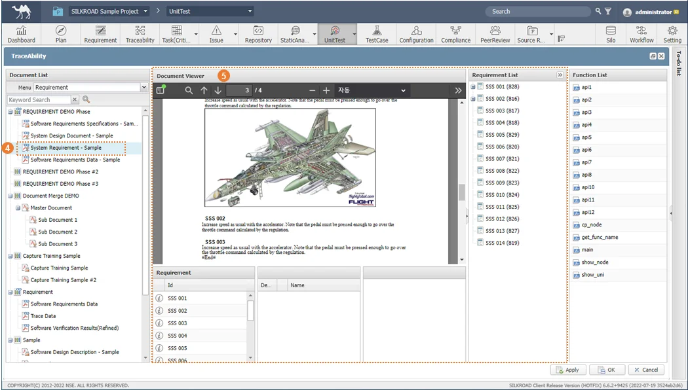 |
⑥ ‘Function list’의 Function을 드래그하여 ‘Requirement List’의 요구사항과 추적성을 연결한다.
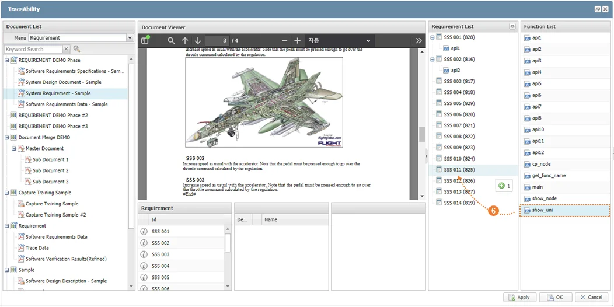 |
⑦ ‘OK’ 버튼을 클릭하여 추적성 연결 정보를 저장한다.
① ‘Test Description’ 영역의 ‘
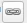
’ 버튼을 클릭한다.
|
② ‘Select Revision’ 창이 생성된다.
③ ‘Revision’에서 추적성을 연결할 소스 리비전 파일을 선택한다.
④ ‘OK’ 버튼을 클릭하여 추적성 연결 정보를 저장한다.
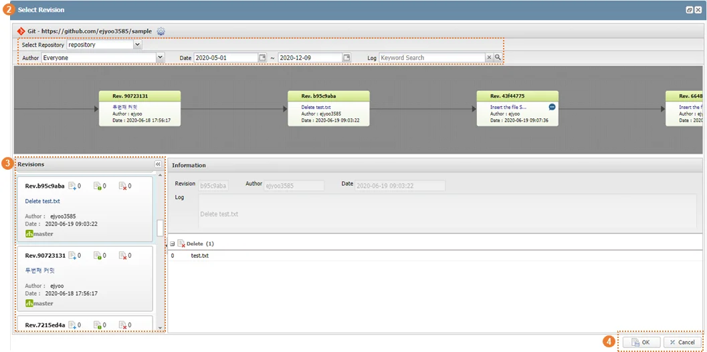 |
⑤ ‘Test Description’의 ‘Revision’에 소스 리비전 정보가 표시된다.
① SILKROAD에 등록된 Item과 연계하고자 하는 단위시험결과 테스트를 선택한다.
① ‘Test Description’에서 ‘Relation’ 버튼을 클릭한다.
② Resource Connector 가 생성된다.
③ Menu Tree의 Menu 드롭박스에서 연결하고자 하는 Menu를 선택한다.
|
④ 선택된 Menu에 등록되어 있는 아이템을 선택하고, Menu Items 영역에서 연결하고자 하는 Item의 체크박스를 체크한다.
⑤ Resource Connector 하단의 Relation Items에 선택한 Item이 등록되는지 확인 후 OK 버튼을 클릭하여 저장한다.
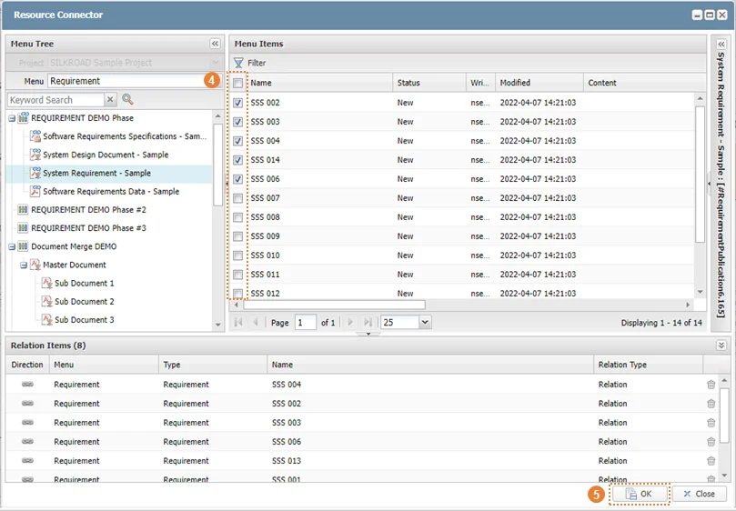 |
⑥ ‘Success’ 창이 생성되면 OK 버튼을 클릭한다.
① 삭제하고자 하는 단위시험결과를 선택한다.
② 단위시험결과 목록 상단의 ‘Delete’ 버튼을 클릭한다.
③ ‘Delete’ 창이 생성되면 ‘OK’ 버튼을 클릭하여 삭제를 완료한다.
|
번호 | 메시지 | 설명 | 해결방안 |
|---|---|---|---|
1 | Please upload xlsx file format. | ‘xlsx’ 형태가 아닌 다른 형태의 파일을 등록하려고 시도하는 경우 | 단위시험결과를 ‘xlsx’ 형태로 저장한 후 단위시험결과를 등록 |
2 | Identical function value cannot be registered redundantly. | 요구사항에 동일한 Function과 중복적으로 추적성을 연결시도하는 경우 | 요구사항에 동일한 Function을 중복하여 추적성을 연결하지 않을 것 |
3 | Please enter the name value! | 단위시험결과 등록시 Name을 기재하지 않을 경우 | Name을 기재한 후 단위시험결과 등록 |
4 | No Data. Please make sure if the input file is valid. | ||
5 | |||
6 | |||
7 | |||
8 | |||
9 |